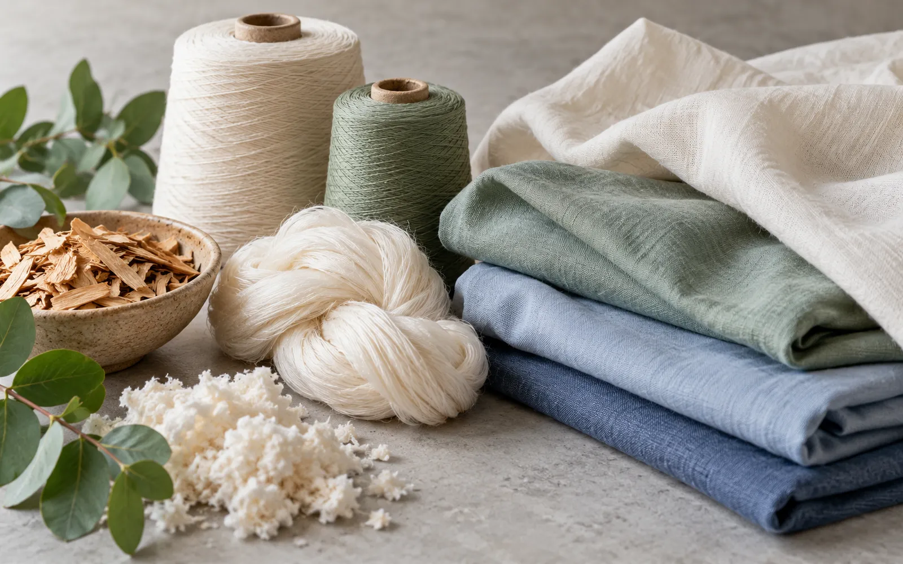
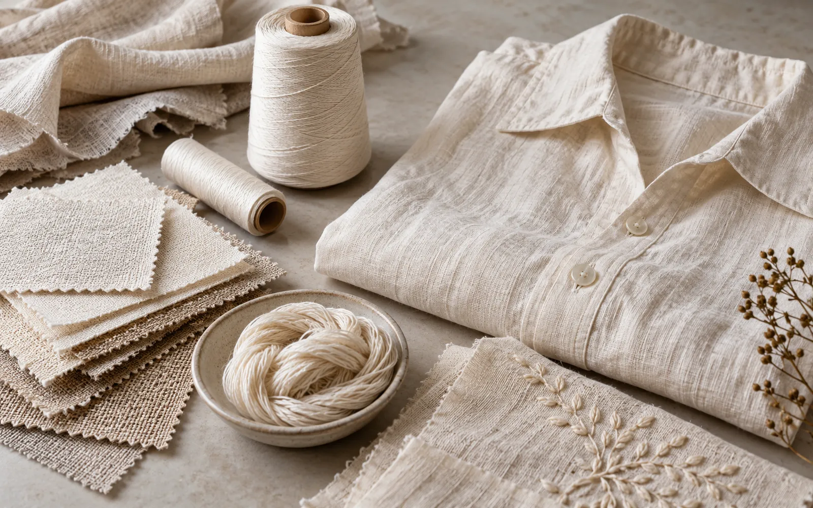

Europe's ban on destroying unsold clothes: what it means for SS27 buys, AW26 clearance and textile EPR
The EU ban on destroying unsold clothes and shoes now applies to large firms. What it means for SS27 buys, AW26 clearance and textile EPR for anyone selling to Europe.

Since 19 July 2026, large companies in the European Union may no longer destroy unsold clothes, clothing accessories and footwear. The European Commission calls it the first product group under the new ban, set under the Ecodesign for Sustainable Products Regulation (ESPR). It matters well beyond Europe: any brand, wholesaler or manufacturer that ships stock into the EU now has to plan what happens to the pieces that do not sell. With SS27 orders being finalised and AW26 heading into the January sales, this guide explains the rules and what to change in buying, production and clearance.
What the ban says
The Commission says companies must prioritise keeping products in use: selling them, including at a discount or in other markets, donating them to charities or social enterprises, or preparing them for reuse through repair, refurbishment or remanufacturing. Any destruction that is still allowed must follow the waste hierarchy, with recycling first. The rule applies to large companies from 19 July 2026 and to medium-sized companies from 19 July 2030. Small and micro businesses are exempt. Vendor guides list the covered goods by customs code: apparel and clothing accessories (CN 61, 62, 4203, 6504 and 6505) and footwear (CN 6401 to 6405).
The scale is real. The Commission cites European Environment Agency estimates that 4–9% of all textile products put on the European market are destroyed before use, or 264,000 to 594,000 tonnes a year.
When destruction is still allowed
Delegated Regulation (EU) 2026/296 sets out the exceptions. As summarised by MyProductPassport, destruction remains possible only with documented proof in cases such as:
- Products that are unsafe or non-compliant with EU or national law, where destruction is the proportionate fix.
- Goods that infringe intellectual property (counterfeits), or licensed products whose licence has expired.
- Items where labels, logos or protected design features cannot feasibly be removed to allow resale.
- Damaged, contaminated or defective goods where repair is not technically or cost-effectively possible (repair costing more than destruction plus a replacement).
- Stock that was offered for donation to at least three social economy organisations in the EU, or on an easy-to-find page of the company website for at least eight weeks, and not taken.
Companies relying on an exception must keep evidence, such as documents or test results, for five years, and publish annual reports on what they discarded and why. National authorities enforce the rule and can impose fines.

Next: textile EPR from 2028
The ban is the first of several rules. Directive (EU) 2025/1892, which revises the Waste Framework Directive, entered into force on 16 October 2025. According to law firm VdA, member states must transpose it by 17 June 2027 and set up extended producer responsibility (EPR) schemes for textiles by 17 April 2028, with micro-enterprises given until 17 April 2029. Producers, including importers and online sellers outside the EU, will pay for collection, sorting, reuse and recycling of clothing, accessories, hats, footwear, blankets, bed and kitchen linen and curtains. CMS notes that fees may be adjusted for durability, repairability and recyclability. A textile Digital Product Passport is expected to follow a delegated act that Bindu expects around 2027, with the passport itself applying later.
What it means for SS27 in Europe
Forecut's Europe forecast for SS27 points to featherlight see-through fabrics (organza, voile, ripstop), the return of the waist, below-the-knee skirts and soft pastels such as butter, lavender, sage and light blue. These are trend-led pieces with short selling windows, exactly the stock most at risk of being left over. Over-buying a fast-moving trend now carries a cost that cannot simply be written off and destroyed.
- Buy deeper in carry-over pieces, such as tailoring, trench coats and knitwear, and test trend pieces in smaller first drops with fast reorders.
- Keep logos removable: printed or woven-in branding that cannot be taken off limits resale through outlets and secondary markets.
- Plan the clearance route before the buy: outlets, off-price partners, resale, rental, or markets outside Europe whose seasons run later, such as the Gulf or the southern hemisphere.
- Line up donation and repair partners now, ahead of the January 2027 sales, the first winter clearance under the ban.
- Record what is unsold and why, by style and customs code, so annual disclosures are easy.

For manufacturers and suppliers worldwide
European buyers will push risk back up the supply chain. Expect smaller initial orders, more requests for quick-response capacity, and questions about fibre content, trims and repairability. Suppliers who can offer short lead times on reorders, single-fibre fabrics, removable trims and clear fibre data will be easier to buy from. Brands below the large-company threshold should still prepare: medium firms join in 2030, and EPR will apply to almost every producer selling textiles in the EU from 2028.